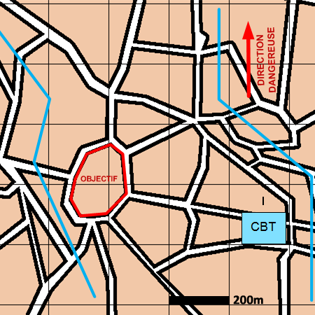

NIVEAU : Automate
ARME : Melee
MISSION : Boucler
NIVEAU : Automate
ARME : Melee
MISSION : Boucler
Schéma de modélisationBoucler |
Paramètres obligatoiresObjectif (parmi les objectifs suivants) Zone Zone à rejoindre et à boucler. Bloc urbain Bloc Urbain à rejoindre et à boucler. |
|
Paramètres optionnelsPréparation terrain |
||
 |
Fiches missions |  |